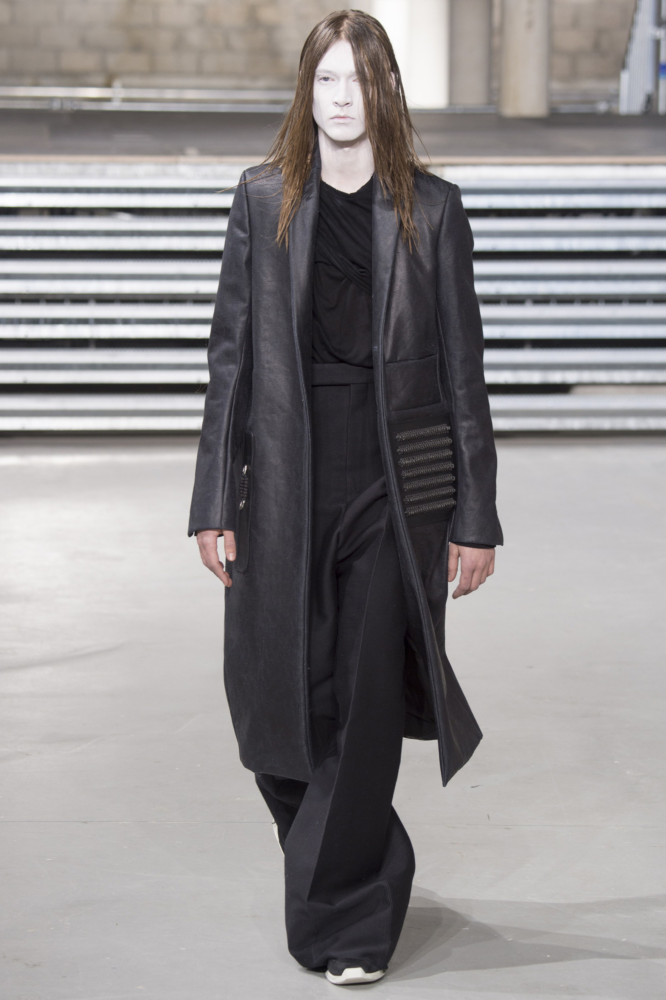

Please. Where are you? Asakawa continues her blind fumbling, which sends up little splashes of stagnant water. With a start, she realizes that her fingers have caught something. Seaweed? Asakawa draws her hands close for a better look... and sees that is HAIR. A thick clump of long, black hair. Suddenly a pale, thin ARM shoots out from beneath the water, catching Asakawa just below the wrist. Asakawa’s ears are filled with a SOUND like moaning as something slowly rises from its watery slumber. It is a GIRL, her face completely hidden by long, black hair. CUT to a shot of Asakawa’s face. Far from being frightened, her features are oddly placid. She regards the fearsome thing before her with an almost tender look. Asakawa reaches out, lightly strokes that long hair. ASAKAWA It’s you... She strokes the hair again, and abruptly it peels right off the head with a loud SQUELCH. Revealed is not a face at all but a SKULL. Its sockets are at first menacingly empty, but then begin to ooze the green SLUDGE it has pulled up from the bottom of the well. Like a mother comforting a frightened child, Asakawa pulls the skeletal remains to her breast, strokes the bony head comfortingly. Her eyes begin to glaze.
